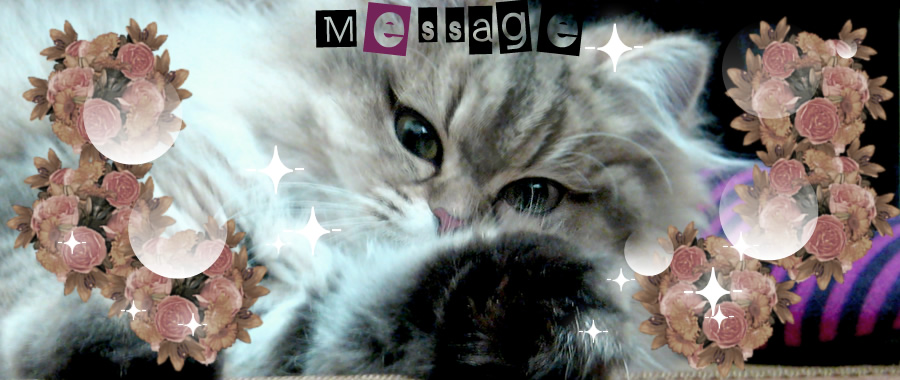
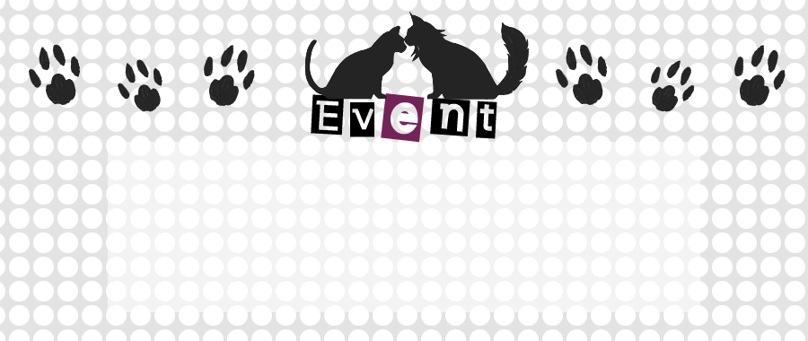
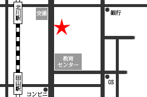

ホーム
ネコさまの生態
ネコさまのお世話
ネコさまグッズ
NFSについて
お問い合わせ
検索

ネコさまモデルに新ネコ登場！
チンチラのちぃさまです。スタッフの間では「挑戦的な瞳がワイルド♡」と話題になっています！

イベント名 ：ネコさま想う、ゆえに我あり
場所 ： 大阪市架空之区1-2-3 象牙の塔23F
日時 ： 13:00〜20:00
入場料 ： 5,000円
連絡先 ：
neko@rasen-d.net
詳しいイベント情報はこちら！>>

にゃんこファンにようこそ！
ネコさまの僕イベントの開催が決定しました！
一緒にネコさまへの正しいサービスのあり方を研究しましょう！